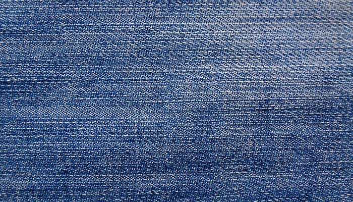
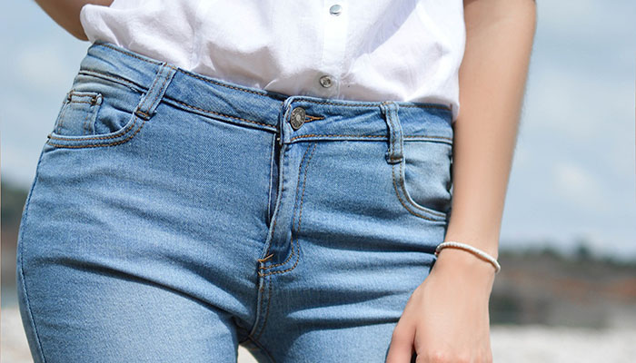

3 mars 2019
3 bonnes raisons d'opter pour des vêtements haut de gamme
Vous n’êtes pas satisfaite de votre garde robe ? Vous vous dirigez pourtant sans cesse vers les mêmes grandes enseignes de textile ? Votre armoire est pleine de vêtements que vous ne portez pas ? Il serait temps de vous essayer aux vêtements pour femme haut de gamme. Il est vrai qu’il est tentant pour les consommatrices de se diriger vers les magasins textiles de grande échelle proposant des prix toujours plus attractifs et enjolivés de promotions. Cependant, en terme de choix de consommation, le prêt-à porter haut de gamme, offre de nombreux avantages.
Lire l'article26 janvier 2019
Les différentes matières textiles
Vous n’êtes pas satisfaite de votre garde robe ? Vous vous dirigez pourtant sans cesse vers les mêmes grandes enseignes de textile ? Votre armoire est pleine de vêtements que vous ne portez pas ? Il serait temps de vous essayer aux vêtements pour femme haut de gamme. Il est vrai qu’il est tentant pour les consommatrices de se diriger vers les magasins textiles de grande échelle proposant des prix toujours plus attractifs et enjolivés de promotions. Cependant, en terme de choix de consommation, le prêt-à porter haut de gamme, offre de nombreux avantages.
Lire l'article26 décembre 2018
Se maquiller selon sa tenue
Vous n’êtes pas satisfaite de votre garde robe ? Vous vous dirigez pourtant sans cesse vers les mêmes grandes enseignes de textile ? Votre armoire est pleine de vêtements que vous ne portez pas ? Il serait temps de vous essayer aux vêtements pour femme haut de gamme. Il est vrai qu’il est tentant pour les consommatrices de se diriger vers les magasins textiles de grande échelle proposant des prix toujours plus attractifs et enjolivés de promotions. Cependant, en terme de choix de consommation, le prêt-à porter haut de gamme, offre de nombreux avantages.
Lire l'article26 décembre 2018
Tendances mode femme printemps-été 2019
Vous n’êtes pas satisfaite de votre garde robe ? Vous vous dirigez pourtant sans cesse vers les mêmes grandes enseignes de textile ? Votre armoire est pleine de vêtements que vous ne portez pas ? Il serait temps de vous essayer aux vêtements pour femme haut de gamme. Il est vrai qu’il est tentant pour les consommatrices de se diriger vers les magasins textiles de grande échelle proposant des prix toujours plus attractifs et enjolivés de promotions. Cependant, en terme de choix de consommation, le prêt-à porter haut de gamme, offre de nombreux avantages.
Lire l'article26 décembre 2018
Choisir son jean selon sa morphologie
Vous n’êtes pas satisfaite de votre garde robe ? Vous vous dirigez pourtant sans cesse vers les mêmes grandes enseignes de textile ? Votre armoire est pleine de vêtements que vous ne portez pas ? Il serait temps de vous essayer aux vêtements pour femme haut de gamme. Il est vrai qu’il est tentant pour les consommatrices de se diriger vers les magasins textiles de grande échelle proposant des prix toujours plus attractifs et enjolivés de promotions. Cependant, en terme de choix de consommation, le prêt-à porter haut de gamme, offre de nombreux avantages.
Lire l'article26 décembre 2018
Choisir ses lunettes selon la forme de son visage
Vous n’êtes pas satisfaite de votre garde robe ? Vous vous dirigez pourtant sans cesse vers les mêmes grandes enseignes de textile ? Votre armoire est pleine de vêtements que vous ne portez pas ? Il serait temps de vous essayer aux vêtements pour femme haut de gamme. Il est vrai qu’il est tentant pour les consommatrices de se diriger vers les magasins textiles de grande échelle proposant des prix toujours plus attractifs et enjolivés de promotions. Cependant, en terme de choix de consommation, le prêt-à porter haut de gamme, offre de nombreux avantages.
Lire l'article